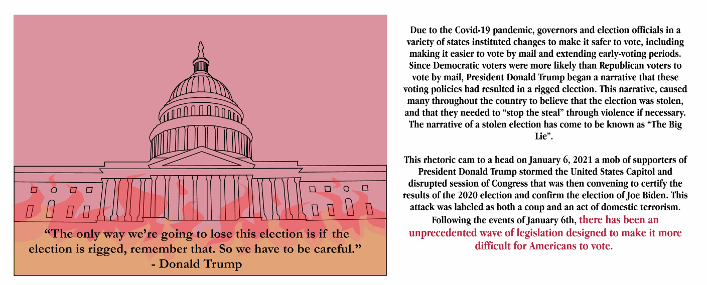
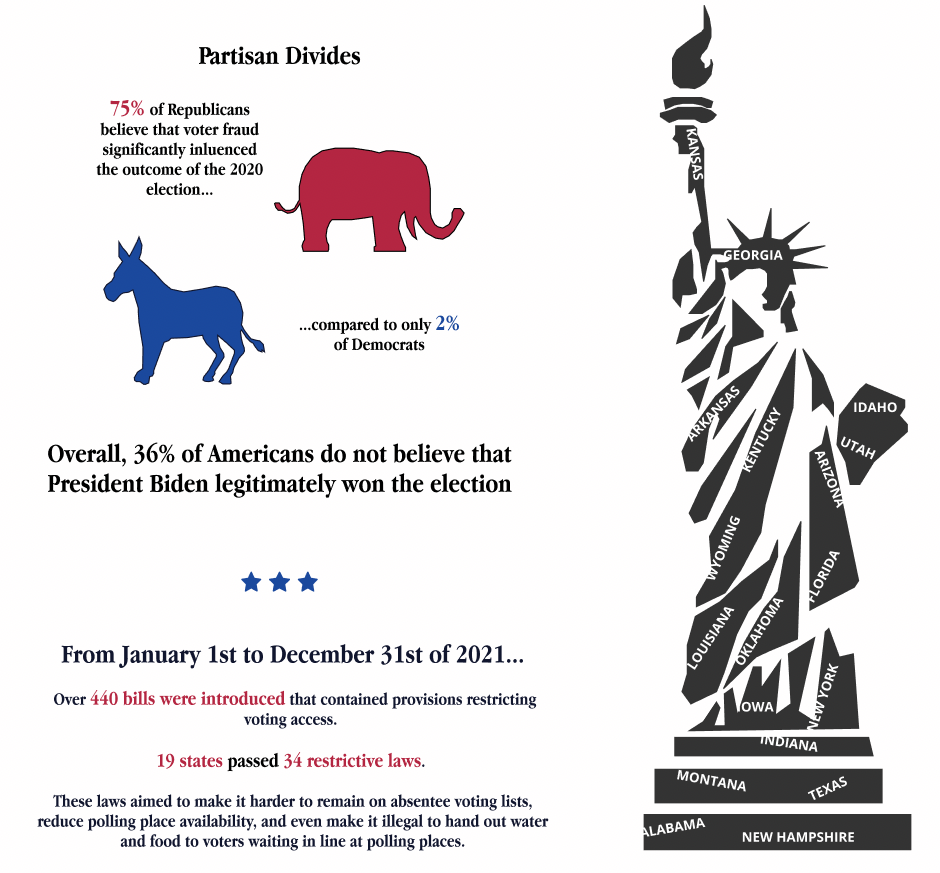
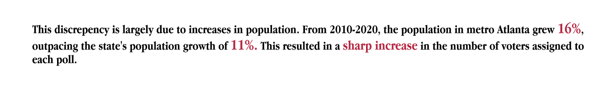
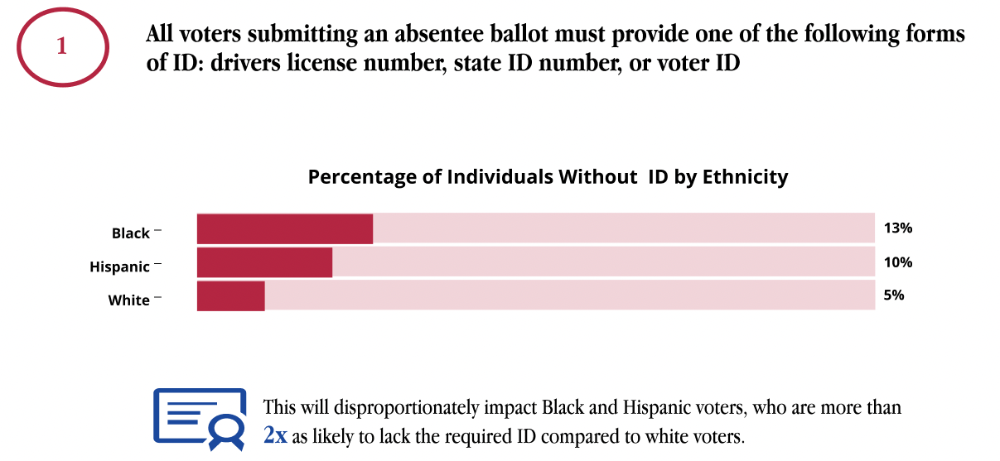
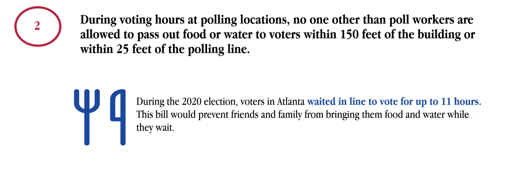
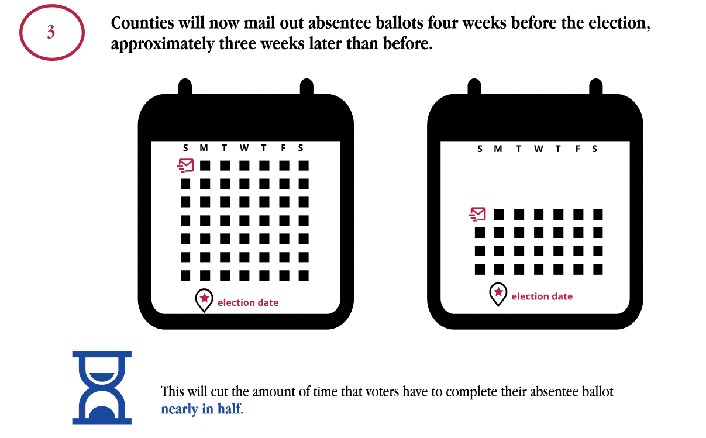

Does your vote count?
Exploring the Ways in Which New Legislation Threatens to Undermine the Integrity of American Democracy
Exploring the Ways in Which New Legislation Threatens to Undermine the Integrity of American Democracy
January 6th 2022

The State of Voting Rights in America
Click "Start Animation" below to see the increase in number of voters per polling location from 2012-2020.
What is driving this change?
Throughout 2021 and into 2022, “The Big Lie” has driven a surge in legislation to restrict voting access. Many Republicans profess to now view America’s electoral process with lower levels of trust and consequently, much of this legislation has come from Republican-led states.

Where Are These Bills?
While many bills are being passed by Republican controlled legislatures, anti-voting legistlation is not solely a red state issue. 49 states introduced anti-voting legislation, and bills passed in both red and blue states.

Of the 10 states that introduced the most anti-voting related legislation in 2021, 5 were Democrat led, 4 Republican led, and 1 was mixed. It is worth noting that four of these states were amongst those that were most closely contested in the 2020 election including Arizona, Pennsylvania, Michigan, and Georgia. Use the table below to explore

Of the 10 states that passed the most anti-voting related legislation in 2021, 2 were Democrat led, 7 Republican led, and 1 was mixed. Use the table below to explore.

The differences between the political affiliations of the states that introduced bills versus the states that passed bills suggests that while voting rights are currently being threatened in all states, currently such legislation is being passed more easily in Republican controlled legislatures.

What about 2022?
Preliminary data suggests that 2022 may bring another swath of of anti-voting rights legistlation. Comparing the first 2 weeks of the year, 2022 opened with nearly 3x as many voting restrictive bills as 2021.

The State of Voting in Georgia



Click "Start Animation" below to see the increase in number of voters per polling location from 2012-2020.


Despite these voting difficulties, Democrats still won the state of Georgia
In Georgia, 73% of Democrats in the state are Black, and only 25% are white. Disenfranchising Black voters will disproportionately harm the Democratic party. In response to this Presidential loss, Georgia Republicans introduced new legislation, the Election Integrity Act of 2021 which curbs voting access for many individuals, and disproportinately targets nonwhite voters.

What does the Election Integrity Act do?



To find out more about how the Election Integrity Act of 2021 will impact voters, hover over the top of the visualization